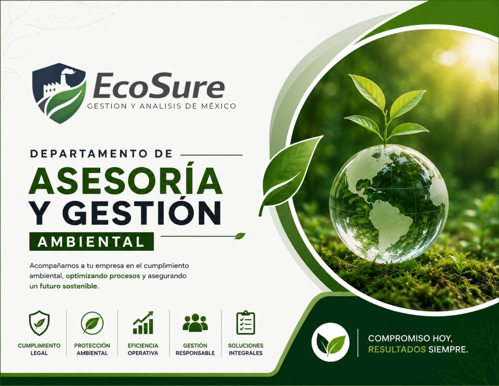
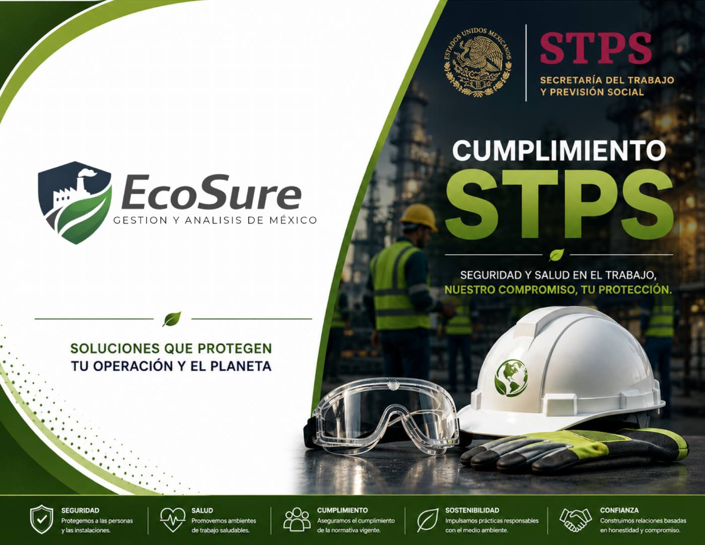
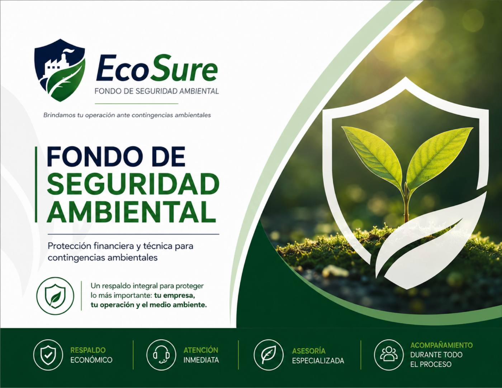
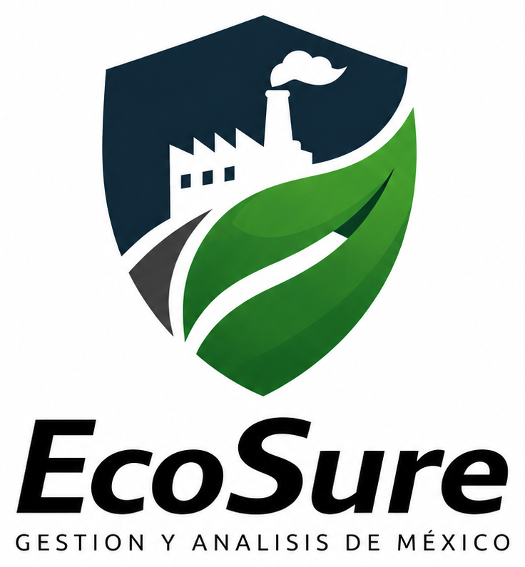

STPSSeguridad laboral
Cumplimiento STPS
Estudios y diagnósticos para proteger a tu personal, prevenir riesgos y mantener centros de trabajo seguros.
- Ruido e iluminación
- Riesgo eléctrico e incendio
- EPP y sustancias químicas
Soluciones integrales para que tu empresa cumpla, prevenga riesgos y opere con responsabilidad ambiental.

Te acompañamos ante las principales autoridades
Integramos seguridad, medio ambiente y gestión regulatoria en soluciones claras, medibles y adaptadas a tu operación.
Estudios y diagnósticos para proteger a tu personal, prevenir riesgos y mantener centros de trabajo seguros.
Trámites, estudios y planes para operar conforme a la normativa ambiental federal y reducir contingencias.
Acompañamiento integral para permisos, licencias, registros y obligaciones ambientales a nivel estatal.
Soluciones para uso de suelo, funcionamiento, impacto vial y manejo responsable de descargas y residuos.

Trabajamos con laboratorios acreditados por la Entidad Mexicana de Acreditación para análisis de aguas residuales y parámetros de agua potable.
Un programa continuo para fortalecer la prevención, respuesta y cumplimiento de empresas e industrias.
Conocer el programaOrientación técnica inicial ante contingencias ambientales.
Recorridos, checklist normativo y detección temprana de riesgos.
Semáforo claro para priorizar acciones y decisiones.
Control de licencias, evidencias, reportes y vencimientos.
Seguimiento a cambios normativos y nuevas obligaciones.
Asesoría técnica ante STPS, ecología y autoridades locales.

Protección técnica y financiera para actuar con rapidez, reducir el impacto de una contingencia y cuidar la continuidad operativa de tu empresa.

En EcoSure impulsamos el cumplimiento legal, la prevención de riesgos y la sostenibilidad en las empresas, generando valor, confianza y tranquilidad.
Brindar soluciones integrales con acompañamiento cercano para que cada empresa cumpla y mejore de forma continua.
Ser una empresa líder y referente en cumplimiento ambiental, seguridad y gestión integral en México.
Cuéntanos qué necesita tu operación. Nuestro equipo te orientará con una solución clara y personalizada.